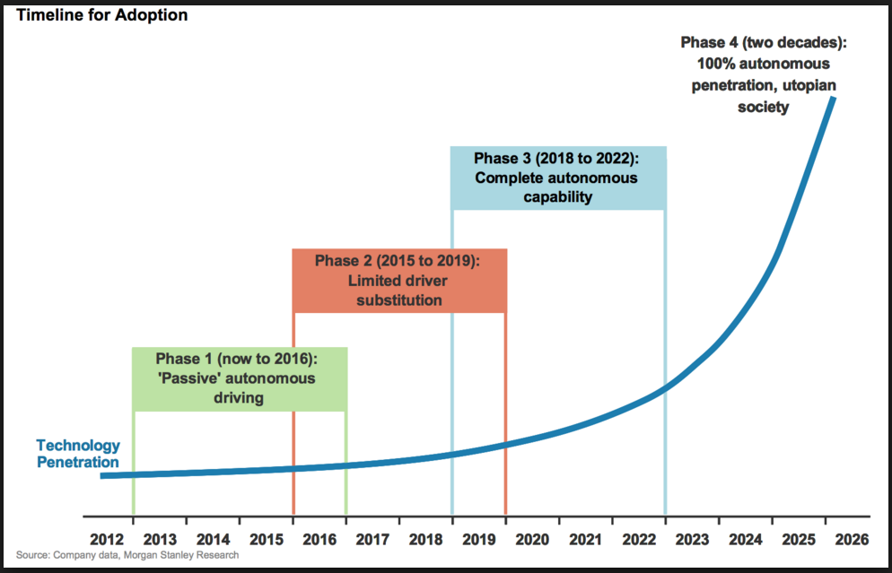
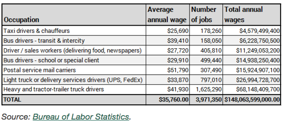

ISSUE 1: The trolley problem
Question: Imagine a runaway trolley (train) is about to run over and kill five people standing on the tracks. Watching the scene from the outside,
you stand next to a switch that can shunt the train to a sidetrack, on which only one person stands. Should you throw the switch, killing the one person
on the sidetrack (who otherwise would live if you did nothing), in order to save five others in harm’s way?
How programmers code for this problem? This a hard decision even for human, but it would be an unreasonable act of faith to think that programming issues will
sort themselves out without a deliberate discussion about ethics.
The standard of human to judge autonomous cars' decisions will be huge different from human's decisions. Because
human think if autonomous cars are not using, this kind of things will not happen. We don’t like thinking about these uncomfortable and difficult choices,
but programmers may have to do exactly that.

ISSUE 2: Employment
There's a concern of the rise of autonomous car that autonomous car will kill millions of jobs. For example, Taxi drivers. thousands of people earn their living as drivers.
For taxi industry or Uber, once autonomous car replace human drivers, it must be disaster. Also, autonomous car can work longer and with less errors, the driverless revolution
is about so much more than taxis, and has the potential to radically transform not just transportation but the entire economy. According to the Bureau of Labor Statistics there are about 178,000
people employed as taxi drivers or chauffeurs in the United States.

And also there's a truth, This is only the beginning. Postal Service, or other driving-focused jobs will be influenced.
ISSUE 3: The accuracy of control center
The more vehicles providing information, the more precisely the environment can be mapped.
However, the net recognition rate isn't ideal. Not all of this sensors' data can be transferred due to limited network capacity, so the volume of data has to be reduced.
Also, data depends on sensor's work, in poor weather and bad lighting conditions,sensors' work can be bad.
less data will influence the accuracy of real-time information. Also the data need be to analyzed before send back to cars.
The system' speed of handling data is crucial for data's accuracy. Once the data is not accurate, something bad will happen to the cars and traffic.
ISSUE 4: Security
No security system is ever perfect but some of the glaring flaws found in a number of cars and Internet of Things (IoT) devices is a little worrying. As more and more cars and other
devices start connecting to the internet and each other the security challenge is only getting bigger.From a hacker’s perspective,
the attack surface area increases drastically. Autonomous cars connected technologies—including laser range finders,
cameras, ultrasonic devices, wheel sensors, and inertial measurement systems—will all be access points for hackers.
If even one of these potential points of compromise is not properly secured, then the entire operation could come crashing down.
Apart from internal system hacking threats, privacy and exposure of sensitive data is another issue when it comes to customer safety in driverless cars.
Autonomous cars collect massive amount of data and essentially know everything about owners – from the places that frequently travel to,
home and even the person who are traveling with.